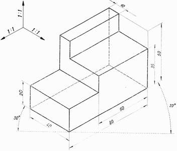
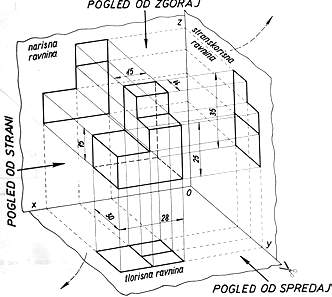
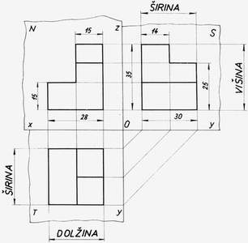

|
Problem: Izdelki, ki jih dokumentiramo, so telesa, ki imajo neko prostornino in zavzemajo doloèen prostor. Dokumentacija, pa naj bo na listih papirja ali v elektronski obliki, pa je sestavljena iz risb, ki so predstavljene na eni ploskvi - v dveh dimenzijah ali razsežnostih. Predmete, ki zapolnjujejo tri razsežnostni ali tri dimenzionalni (3D) prostor, moramo torej predstaviti v dvorazsežnostnem, dvodimenzionalnem (2D) prostoru.
 Slika 1: Konèna oblika izdelka je zato v 2D ravnini pogosto predstavljena v treh osnovnih pogledih: 1. pogled od spredaj - naris 2. pogled od zgoraj - tloris 3. pogled s strani - stranski ris (obièajno gre za pogled z leve strani)  Slika 2: Osnovno pravilo risanja pravokotne projekcije: Tloris narišemo vertikalno pod narisom, stranski ris pa horizontalno na desni od narisa.  Slika 3: 1. Vprašanja za usmerjanje pozornosti in usvajanje novih besed: 1. Koliko razsežnosti zavzemajo telesa? 2. Kako razsežnosti še imenujemo drugaèe? 3. Koliko razsežnosti zavzemajo narisani liki? 4. Kako se imenuje pogled od spredaj? 5. Kako se imenuje pogled od zgoraj? 6. Kako se imenuje pogled s strani? 7. Kje narišemo tloris glede na naris? 8. Kje narišemo stranski ris glede na naris? 9. Koliko osnovnih pogledov premore pravokotna projekcija? 2. Zapiši od ene do pet kljuènih besed, ki povzemajo vsebino te uène enote. 3. Vprašanja za razmislek, ponavljanje in povezovanje z lastno izkušnjo: 1. Zakaj mora vsebovati pravokotna projekcija tri osnovne poglede? 2. Kako se glasi osnovno pravilo risanja pravokotne projekcije? 4. Domaèa naloga: V enem do petih stavkih zapiši, kaj ti je v tej uèni enoti najbolj ostalo v spominu. |